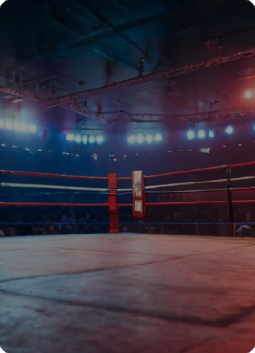

No boxe, dois atletas (boxeadores) lutam num ringue, utilizando apenas as mãos para atacar e defender. O objetivo principal é tentar nocautear o adversário com um soco preciso e, ao mesmo tempo, evitar ser atingido.
Golpe

Ringue/Equipamento
Faltas

O boxe, uma arte milenar de combate, tem suas raízes profundamente entrelaçadas com a história da humanidade. Remontando a civilizações antigas, os registros de combates corpo a corpo encontram-se em diversas culturas ao longo dos séculos. No entanto, o boxe moderno, como o conhecemos hoje, começou a ganhar forma no século XVIII na Inglaterra, evoluindo de uma prática brutal e desorganizada para um esporte regulamentado, com regras estabelecidas para garantir a segurança dos competidores.
O boxe alcançou destaque internacional com sua inclusão nos Jogos Olímpicos da Antiguidade, sendo uma das disciplinas esportivas mais prestigiadas. Após um período de ausência, o boxe foi reintroduzido nos Jogos Olímpicos modernos em St. Louis, em 1904, marcando seu retorno triunfante ao cenário esportivo mundial. Desde então, o boxe olímpico tem proporcionado momentos memoráveis, destacando talentos que mais tarde brilhariam nos ringues profissionais.